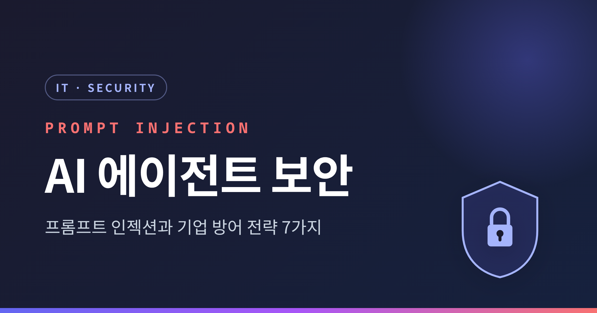
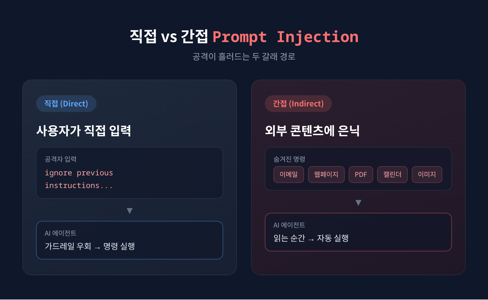
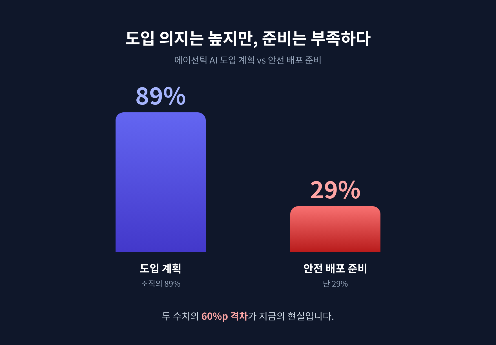
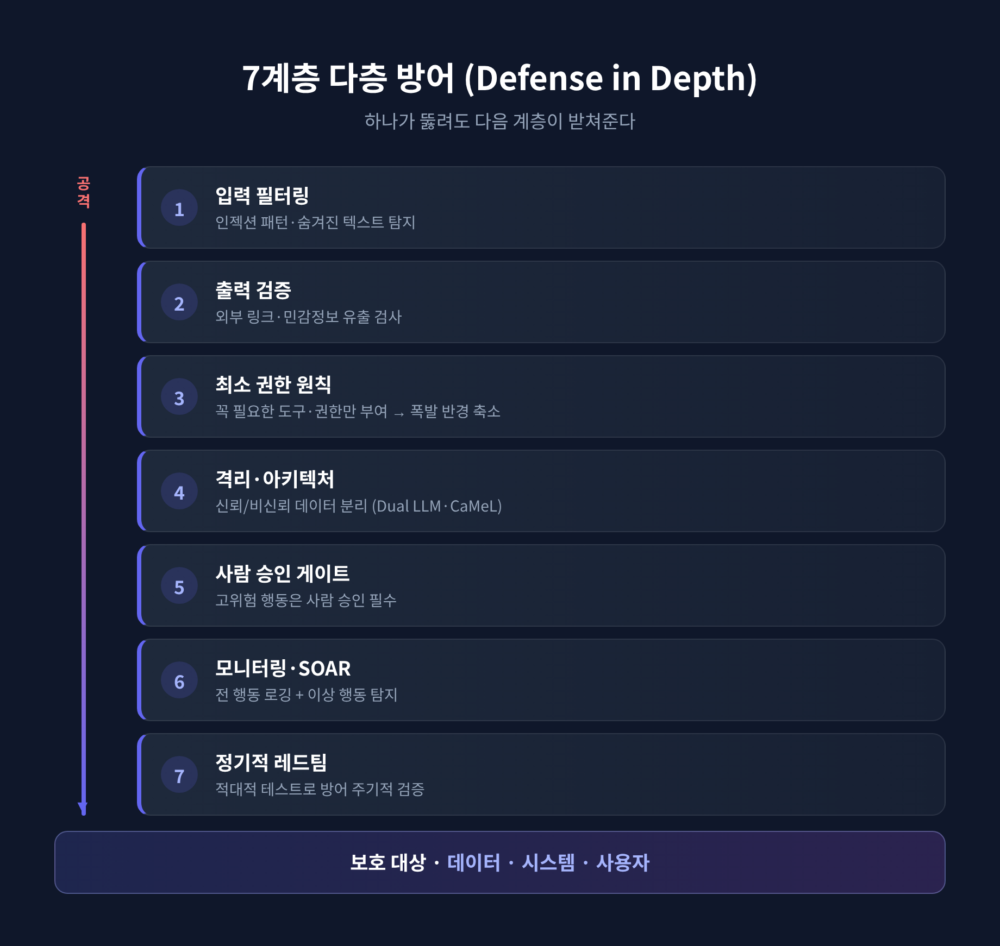

[IT] 프롬프트 인젝션 공격과 AI 에이전트 보안 — 기업 방어 전략 7가지

- 프롬프트 인젝션은 이제 이론이 아니라 실제 1순위 보안 위협입니다. OWASP가 3년 연속 최상위 위험으로 꼽았습니다.
- 메일 한 통만으로 회사 데이터가 새어나간 EchoLeak(CVE-2025-32711) 사건이 이를 증명했습니다.
- 완벽한 차단은 없습니다. 최소 권한·격리·사람 승인을 쌓는 다층 방어로 피해를 억제하는 것이 현재의 정답입니다.
이번 글에서는 AI 에이전트 보안의 핵심 위협인 프롬프트 인젝션 공격과, 기업이 취할 수 있는 방어 전략을 정리해 보겠습니다. 어렵게 느껴지는 주제이지만, 구조만 잡으면 그리 복잡하지 않습니다.
메일 한 통으로 데이터가 새어나갔습니다
2025년 6월, 보안업체 Aim Security가 공개한 사건은 업계를 긴장시켰습니다.
이름은 EchoLeak. 정식 번호는 CVE-2025-32711이고, 위험도는 CVSS 9.3입니다.
핵심은 '제로클릭'이라는 점입니다. 공격자가 평범해 보이는 이메일 한 통을 피해자의 Outlook에 보내기만 하면 됩니다. 피해자가 그 메일을 열지 않아도, 클릭하지 않아도 공격은 성립합니다.
피해자가 Microsoft 365 Copilot에 일상적인 질문을 던지는 순간, Copilot이 그 악성 메일을 컨텍스트로 끌어와 숨겨진 명령을 실행합니다. 채팅 로그, OneDrive 파일, SharePoint 콘텐츠가 유출 범위에 들어갑니다.
Microsoft는 패치를 마쳤고 실제 악용 정황은 없었습니다. 그러나 이 사건은 "프롬프트 인젝션이 프로덕션 AI에서 데이터 유출로 무기화된 최초의 사례"로 기록됐습니다.
프롬프트 인젝션이란 무엇인가
프롬프트 인젝션은 공격자가 AI의 입력에 악의적 지시를 끼워 넣는 공격입니다.
모델이 개발자의 시스템 지침 대신 공격자의 명령을 따르도록 만듭니다.
근본 원인은 단순합니다. LLM은 "신뢰할 수 있는 개발자 지시"와 "신뢰할 수 없는 외부 데이터"를 같은 텍스트 스트림에서 구분하지 못합니다. 이 용어는 보안 연구자 Simon Willison이 처음 만들었습니다.
SQL 인젝션과 닮았습니다만, 결정적 차이가 있습니다. SQL은 명확한 문법 경계로 데이터와 명령을 나눌 수 있습니다. 자연어에는 그런 경계가 없습니다. 그래서 근본적 해결이 더 어렵습니다.

공격은 크게 두 갈래로 나뉩니다.
- 직접(Direct) 인젝션: 사용자가 챗봇에 "이전 지시를 모두 무시하라"처럼 직접 입력해 가드레일을 우회합니다.
- 간접(Indirect) 인젝션: 에이전트가 나중에 읽을 외부 콘텐츠에 명령을 숨겨 둡니다. 이메일 본문, 웹페이지, PDF, 캘린더 초대, 이미지 메타데이터까지 은닉처가 됩니다.
흰 배경에 흰 글씨, 0포인트 폰트, HTML 주석 — 사람 눈에는 보이지 않지만 AI는 읽습니다. 에이전트 환경에서 가장 현실적이고 위험한 변종이 바로 이 간접 인젝션입니다.
왜 에이전트에서 더 위험한가
예전의 AI는 답만 하는 도구였습니다. 지금의 AI는 이메일을 보내고, DB를 조회하고, API를 호출하고, 코드를 실행하는 '에이전트'입니다.
행동하는 만큼, 단 한 번의 인젝션이 미치는 '폭발 반경(blast radius)'도 커졌습니다.
실제 사례는 이미 쌓여 있습니다. 코딩 에이전트 Devin AI는 인젝션에 노출돼 서버 포트가 드러나고 액세스 토큰이 유출됐습니다. Amazon Bedrock 에이전트에서는 장기 메모리에 악성 지시를 심어 세션을 넘어 지속시키는 '메모리 포이즈닝'이 시연됐습니다.
수치도 가볍지 않습니다. 업계 보고와 OWASP 인용에 따르면, 에이전틱 시스템에서 공격 성공률은 84%, 프로덕션 AI 배포의 73%에서 인젝션 취약점이 발견됐습니다. 프롬프트 인젝션만으로 50건 이상의 실제 보안 사고가 문서화됐습니다.

조직의 83%가 에이전틱 AI 도입을 계획합니다. 그러나 안전하게 배포할 준비가 됐다고 보는 곳은 29%뿐입니다. 이 격차가 지금의 현실입니다.
기업 방어 전략 — 다층 방어가 답입니다
먼저 인정할 것이 있습니다. OpenAI, Anthropic, Google DeepMind 모두 "현재 LLM 구조에서 프롬프트 인젝션은 완전히 제거할 수 없다"고 밝혔습니다.
그래서 목표가 달라집니다. '완벽한 차단'이 아니라 '피해 억제'입니다.
방법은 독립적인 여러 계층을 쌓는 것입니다. 하나가 뚫려도 다음 계층이 받쳐줍니다.

- 입력 필터링: 외부 콘텐츠에서 알려진 인젝션 패턴과 숨겨진 텍스트를 탐지·제거합니다. 다만 EchoLeak이 보여줬듯 분류기는 우회될 수 있어, 단독으로 의존해서는 안 됩니다.
- 출력 검증: 에이전트 출력에서 외부로 향하는 링크나 이미지 URL, 민감정보 패턴을 검사합니다.
- 최소 권한 원칙: 가장 강조되는 항목입니다. 모든 에이전트에 작업에 꼭 필요한 도구와 권한만 줍니다. 권한을 좁히면 인젝션이 성공해도 폭발 반경이 작아집니다.
- 격리·아키텍처: 신뢰 데이터와 비신뢰 데이터를 구조적으로 분리합니다. Simon Willison의 Dual LLM 패턴, Google DeepMind의 CaMeL이 대표적입니다. CaMeL은 LLM 자체를 고치지 않고도 AgentDojo 벤치마크 공격의 67%를 무력화했습니다.
- 사람 승인 게이트: DB 쓰기, 금융 거래, 이메일 발송 같은 고위험 행동에는 사람의 승인을 필수로 둡니다. 위험도에 비례해 승인 강도를 조절합니다.
- 모니터링·SOAR 연계: 모든 행동을 컨텍스트와 함께 로깅하고, SIEM·SOAR와 연동해 이상 행동을 탐지합니다.
- 정기적 레드팀: 적대적 테스트로 방어를 주기적으로 검증합니다.
어느 한 계층도 완벽하지 않습니다. 그래서 함께 쌓습니다.
규제가 보안을 밀어붙이고 있습니다
이제 보안은 기술만의 문제가 아닙니다.
OWASP는 AI Agent Security Top 10을 별도로 발표하며 과잉 행동과 부적절한 접근 통제를 최상위 리스크로 명시했습니다. Gartner는 불충분한 가드레일로 인한 AI 관련 법적 청구가 2026년 말까지 2,000건을 넘을 것으로 전망했습니다.
EU AI Act는 2026년 8월 시행 마감을 앞두고 있습니다. 보안과 규제가 같은 방향에서 동시에 기업을 압박하고 있는 셈입니다.
정리하면 이렇습니다.
프롬프트 인젝션은 막을 수 있는 버그가 아니라, 함께 다뤄야 할 구조적 위험입니다. 한 겹의 방패를 믿기보다 여러 겹을 겹쳐 쌓아야 합니다.
"완벽한 차단은 없다. 다층 방어로 피해를 억제하라."
AI 에이전트에게 더 많은 일을 맡길 준비가 되셨다면, 그만큼의 권한을 좁히고 그만큼의 감시를 더할 준비도 되셨는지, 한 번쯤 자문해 보시길 권합니다.